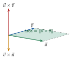
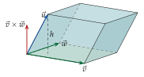
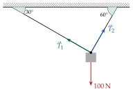
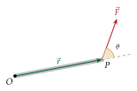

Sean u y v vectores del espacio. Si son colineales, u×v=0. Si no, el producto vectorial (o producto cruz) u×v es el único vector tal que:
es perpendicular a u y a v;
su norma es ∥u×v∥=∥u∥∥v∥senθ, que es el área del paralelogramo determinado por u y v;
{u,v,u×v} es una terna derecha: al curvar los dedos de la mano derecha de u hacia v, el pulgar apunta en el sentido de u×v.

v×u=−(u×v) (anticonmutatividad); en particular u×u=0;
(λu)×v=λ(u×v);
u×(v+w)=u×v+u×w (distributividad);
u×v=0 si y solo si u y v son colineales;
×=k, ×k=, k×=.
(i) Al cambiar el orden, la norma y la dirección no cambian, pero la regla de la mano derecha da el sentido contrario. (ii) Para λ>0 la norma se multiplica por λ y nada más cambia; para λ<0 cambia además el sentido. (iv) es senθ=0. (v) Los vectores de la base canónica son unitarios y perpendiculares, el área del cuadrado unidad es 1 y el sistema es derecho.
(iii) Es la propiedad menos evidente. Una prueba geométrica: si u es unitario, u×x se obtiene proyectando x sobre el plano π perpendicular a u y girando el resultado 90∘ en π (en el sentido que indica la mano derecha). Tanto la proyección como el giro transforman paralelogramos en paralelogramos, así que respetan la regla del paralelogramo: u×(v+w)=u×v+u×w. Para u cualquiera se usa (ii).
Si u=(u1,u2,u3) y v=(v1,v2,v3), u×v=(u2v3−u3v2)−(u1v3−u3v1)+(u1v2−u2v1)k=u1v1u2v2ku3v3.
Escribimos u=u1+u2+u3k y v=v1+v2+v3k y desarrollamos usando la distributividad, (ii) y (v): los términos ×, ×, k×k son nulos, y u×v=u1v2k−u1v3−u2v1k+u2v3+u3v1−u3v2. Agrupando se obtiene la fórmula.
La expresión con el “determinante” es una regla nemotécnica (un seudo-determinante, porque la primera fila tiene vectores y no números), que se desarrolla por la primera fila como en el Apéndice A.
Cambie las coordenadas de u y v con los deslizadores y gire la figura: u × v es perpendicular al paralelogramo y su norma es el área.
Para u=(1,2,3) y v=(4,5,6): u×v=1425k36=(12−15)−(6−12)+(5−8)k=(−3,6,−3). Comprobación: (−3,6,−3)⋅(1,2,3)=−3+12−9=0 y (−3,6,−3)⋅(4,5,6)=−12+30−18=0.
El área del paralelogramo de lados AB y AC es AB×AC, y el área del triángulo △ABC es 21AB×AC. En el plano (tomando la tercera componente igual a cero) se recupera la fórmula del Teorema 9.5.7.
El triángulo de vértices A=(1,0,0), B=(0,2,0) y C=(0,0,3) tiene AB×AC=(−1,2,0)×(−1,0,3)=(6,3,2), de norma 49=7; su área es 27. El vector (6,3,2) es normal al plano ABC, que es 6x+3y+2z=6, como encontramos en el capítulo 10.
El producto mixto (o triple producto escalar) de u, v, w es el número [u,v,w]=u⋅(v×w).
En coordenadas, u⋅(v×w)=u1v1w1u2v2w2u3v3w3.
∣u⋅(v×w)∣ es el volumen del paralelepípedo determinado por u, v, w; el signo es positivo si {u,v,w} es una terna derecha.
u⋅(v×w)=v⋅(w×u)=w⋅(u×v), y cambia de signo si se intercambian dos vectores.
u, v, w son coplanares si y solo si u⋅(v×w)=0.
(i) Es el producto interno de u con las componentes del Teorema 12.3.3, que es el desarrollo del determinante por la primera fila.
(ii) Tomando como base el paralelogramo de v y w, de área ∥v×w∥, la altura del paralelepípedo es la componente escalar de u en la dirección de v×w, en valor absoluto: h=∥v×w∥∣u⋅(v×w)∣.
Por el Teorema 8.7.2, el volumen es base por altura.
(iii) Las permutaciones cíclicas no cambian el paralelepípedo ni la orientación.
(iv) Son coplanares si y solo si el paralelepípedo es “plano”, de volumen cero.
Mueva w: el volumen del paralelepípedo solo depende de la altura de w sobre el plano de u y v.

El tetraedro de vértices O=(0,0,0), A=(1,2,0), B=(0,1,3) y C=(2,0,1) tiene volumen 61[OA,OB,OC], porque es la sexta parte del paralelepípedo (un tercio de la mitad, por el Teorema 8.7.3): 102210031=1(1−0)−2(0−6)+0=13,V=613.
u×(v×w)=(u⋅w)v−(u⋅v)w.
Ambos lados son lineales en cada uno de los tres vectores, así que basta verificar la fórmula cuando u, v, w son vectores de la base canónica. Por ejemplo, con u=, v=, w=: el lado izquierdo es ×k=−, y el derecho es 0⋅−1⋅=−. Los demás casos son análogos.
El vector u×(v×w) es perpendicular a v×w, así que está en el plano de v y w; la fórmula dice exactamente cuál combinación lineal de ellos es. Una regla para recordarla: “el de en medio por el producto de los otros dos, menos el otro de adentro por el producto de los de afuera”. Observe que el producto vectorial no es asociativo: (×)×=0, mientras que ×(×)=−.
El plano que pasa por P0 y contiene a las direcciones de los vectores no colineales u y v es P=P0+su+tv, s,t∈R (ecuación paramétrica del plano).
Su normal es n=u×v, y su ecuación es n⋅P0P=0.
(i) Por el Teorema 11.4.2, P está en el plano si y solo si P0P, u, v son coplanares, es decir, P0P=su+tv. (ii) u×v es perpendicular a u y v, y por tanto a todas sus combinaciones lineales; y P está en el plano si y solo si [P0P,u,v]=0.
La distancia de P a la recta P0+tu es ∥u∥P0P×u.
La distancia entre las rectas alabeadas A+tu y B+sv es ∥u×v∥AB⋅(u×v).
(i) El paralelogramo de lados P0P y u tiene área P0P×u, base ∥u∥ y altura igual a la distancia buscada. (ii) La perpendicular común tiene la dirección de u×v, y la distancia es la longitud de la proyección de AB sobre esa dirección: es la altura del paralelepípedo de aristas AB, u, v sobre la base de lados u, v.
Retomemos las rectas alabeadas L1: (1,0,2)+t(1,1,0) y L2: (0,1,0)+s(0,1,1) del capítulo 10. Tenemos u×v=(1,1,0)×(0,1,1)=(1,−1,1) y AB=(−1,1,−2), así que AB⋅(u×v)=−1−1−2=−4 y la distancia es 34.
Una fuerza es un vector: tiene magnitud (medida en newtons, N), dirección y sentido. Cuando varias fuerzas actúan sobre una partícula, su efecto es el de la fuerza resultante, que es su suma vectorial. La partícula está en equilibrio si la resultante es nula: F1+F2+⋯+Fn=0 (primera ley de Newton).
Un cuerpo de 100 N cuelga de dos cuerdas que forman ángulos de 30∘ y 60∘ con el techo. Halle las tensiones.
Sean T1 y T2 las magnitudes de las tensiones. En componentes, T1=T1(−cos30∘,sen30∘), T2=T2(cos60∘,sen60∘) y el peso es (0,−100). El equilibrio da −23T1+21T2=0,21T1+23T2=100. De la primera, T2=3T1; sustituyendo, 21T1+23T1=100, así que T1=50 N y T2=503≈86,6 N.

Si una fuerza constante F mueve un objeto a lo largo del desplazamiento d=PQ, el trabajo realizado es W=F⋅d=Fdcosθ. Solo la componente de la fuerza en la dirección del movimiento realiza trabajo: una fuerza perpendicular al desplazamiento no trabaja. En el sistema internacional, el trabajo se mide en julios (1 J =1 N⋅m).
Se arrastra una caja 10 m sobre el piso con una cuerda que forma 30∘ con la horizontal, tirando con una fuerza de 50 N. El trabajo es W=50⋅10⋅cos30∘=2503≈433 J. Si la fuerza es F=(3,4,−2) N y el desplazamiento va de P=(1,0,1) a Q=(4,2,0) (en metros), entonces W=(3,4,−2)⋅(3,2,−1)=9+8+2=19 J.
Si una fuerza F se aplica en el punto P de un cuerpo que puede girar alrededor de un punto O, su tendencia a hacerlo girar se mide con el momento o torque τ=r×F,r=OP. Su norma ∥τ∥=∥r∥Fsenθ es la intensidad del giro, y su dirección es la del eje de giro, con el sentido que da la regla de la mano derecha. Por eso una puerta se abre más fácilmente empujando lejos de las bisagras (∥r∥ grande) y perpendicularmente a ella (senθ=1).

Una llave de 0,25 m se aprieta con una fuerza de 40 N que forma 75∘ con la llave. La magnitud del torque es 0,25⋅40⋅sen75∘≈9,66 N⋅m. En coordenadas, si r=(0,25;0;0) y F=(0;40;0), entonces τ=r×F=(0;0;10): el giro es alrededor del eje z, en sentido antihorario visto desde arriba.
¡Fin del curso!